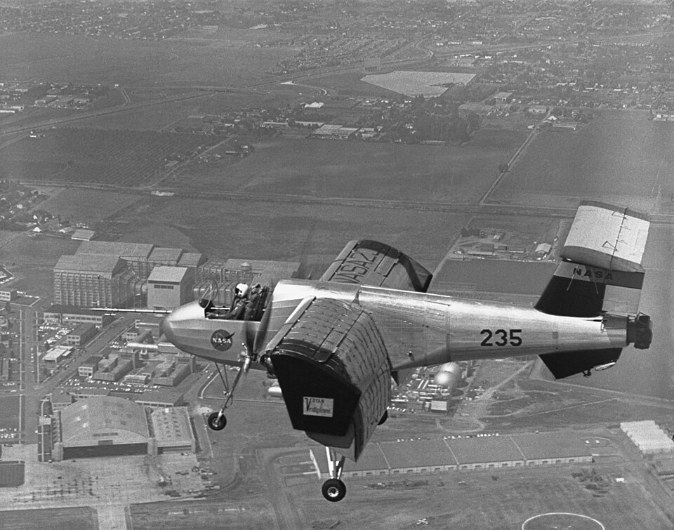

La presión en contra, el flujo que se frena y la estela que queda
El aire que pasa por el frente de una pelota la rodea pegado a su superficie. Pero en algún punto, antes de llegar atrás, se despega, y detrás de la pelota queda una zona de remolinos. Ese despegue es la separación de la capa límite, y es la causa de buena parte del arrastre de los cuerpos redondeados.
David Tong, de la Universidad de Cambridge, empieza por las fotos del Album of Fluid Motion de Milton Van Dyke [1]. Un cuerpo puntiagudo alineado con la corriente, a Re ≈ 7000, deja que las líneas de corriente lo rodeen suavemente: el flujo es laminar y la capa límite se vuelve a unir al resto del fluido en la cola [1]. Pero si el mismo cuerpo se inclina apenas 5°, algo raro pasa en la parte de arriba de la cola: una línea de corriente se aleja del cuerpo y debajo de ella queda un flujo arremolinado [1]. Con un cilindro pasa lo mismo, y cada vez más fuerte a medida que crece el número de Reynolds [1].
¿Por qué se despega? Tong explica la causa con la presión que impone el flujo de afuera sobre la capa límite [1]. Alrededor de un cuerpo redondeado, el flujo exterior se comporta casi como un fluido ideal. Adelante del cuerpo, la presión baja a medida que el flujo lo rodea, y eso acelera el fluido. Atrás, la presión vuelve a subir, y eso lo frena [1].
En algún punto, el fluido junto a la pared se frena del todo. Tong lo define así: es el punto donde la pendiente del perfil de velocidades en la pared se anula [1]. Más allá, el fluido junto a la pared empieza a ir para atrás, y la capa límite se despega del cuerpo y se mete en el fluido, dejando la estela [1].
La bicicleta en la cuesta: pedalear cuesta abajo es fácil; en el llano, también. Pero si llegás a una subida con poca velocidad, te frenás, te parás y empezás a ir para atrás. El fluido de la capa límite llega a la parte de atrás del cuerpo con poca velocidad, porque la pared lo frenó, y la subida de presión lo termina de parar.
La capa que se despega no desaparece: lleva consigo la vorticidad que se generó junto a la pared, y esa vorticidad forma la estela [1]. A números de Reynolds bajos forma dos remolinos quietos detrás del cuerpo; más arriba, remolinos que se desprenden de a uno, como la calle de vórtices de von Kármán del flujo alrededor de un cilindro [1].

Lo importante para el arrastre es la presión en la estela. Cuando la estela es turbulenta, la mezcla hace que la presión sea pareja en toda ella e igual a la del punto de separación [1]. Detrás del cuerpo queda una presión mucho más baja que adelante, y eso produce una fuerza de arrastre mucho mayor [1]. Es la asimetría que el fluido ideal no tenía, y la que resuelve la paradoja de d'Alembert.
Hay una sorpresa: si la capa límite se vuelve turbulenta, se despega más atrás. Tong explica que la mezcla turbulenta transporta la vorticidad mucho mejor hacia afuera y la capa se engrosa; la fricción aumenta, pero la separación se retrasa, la estela se angosta y el arrastre total baja [1]. A números de Reynolds de alrededor de 105, el arrastre cae de golpe: es la crisis del arrastre [1]. Es lo que aprovechan los hoyuelos de una pelota de golf.
Alas que pierden sustentación: la foto del cuerpo inclinado 5° es un adelanto de lo que le pasa a un ala cuando se la inclina demasiado: la presión en contra sobre la cara de arriba despega el flujo, y el ala deja de desviar el aire como antes (un razonamiento a partir del ejemplo de Tong). Para un ala, eso significa una pérdida brusca de sustentación.
La capa límite se despega cuando la presión sube en la dirección del flujo y el fluido junto a la pared, ya frenado por la viscosidad, termina de detenerse. Lo que queda atrás es una estela de baja presión, y esa diferencia de presión entre adelante y atrás es una parte enorme del arrastre de un cuerpo romo. Por eso los cuerpos aerodinámicos tienen colas largas y suaves: suben la presión despacio para que el flujo no se despegue (un razonamiento a partir de lo anterior).
Pregunta para la comunidad: Los autos de carrera y los camiones modernos tienen la parte de atrás alargada y cortada en ángulo suave. ¿Por qué esa forma ayuda a que el flujo no se despegue? Pensalo con el gradiente de presión.